予約制
誕生日のホールケーキ
ホールケーキは完全予約制とのことです。ご予約方法はInstagramでご確認ください。
掲載写真はフリー素材のイメージで、店舗の実際の様子・商品ではありません。他地域で撮影されたものや撮影地不明のものを含みます。
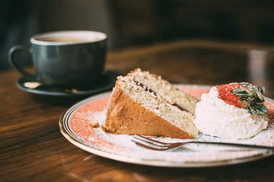
京都府与謝野町岩滝 ・ 小さなケーキ屋さん
大切な日の「おめでとう」を、
ひとつのケーキに結ぶ。
ABOUT
Le Lien (ル・リアン) は、京都府与謝野町岩滝にあるケーキ屋さんです。Instagramのプロフィールでは「京都府与謝野町にある小さなケーキ屋さん」と紹介されています。
ホールケーキは完全予約制。ご利用された方の投稿では、誕生日ケーキに好きなモチーフ(バスケットゴールやボールなど)を描いてもらえたこと、フルーツを多めにするアレンジが定番であること、ガトーショコラのホールも好評であることが紹介されています。
店名の「Lien」はフランス語で「つながり・きずな」を意味する言葉です。誕生日やお祝いの席で、人と人を結ぶケーキ。そんな姿を、このページでは制作側のイメージとして描きました(店名に込められた店主さまの想いは確認できていません)。
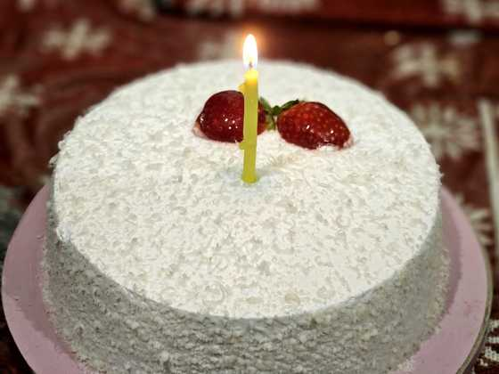
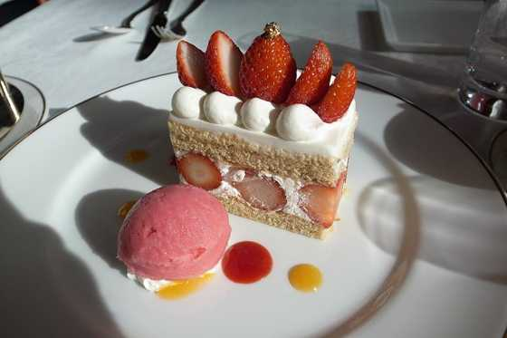
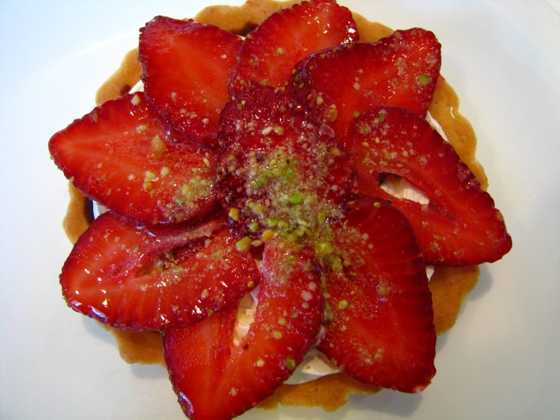
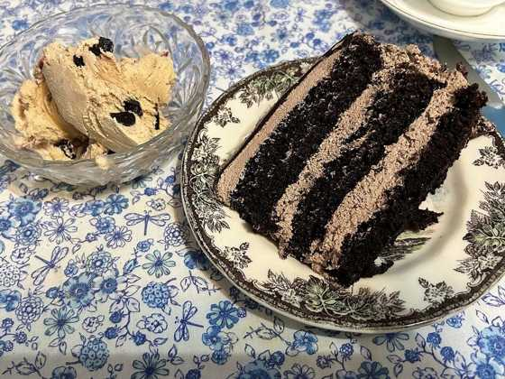
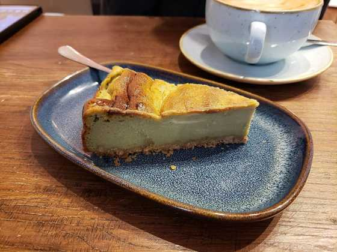
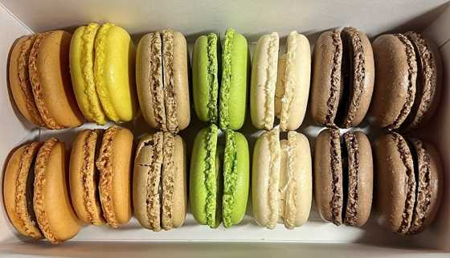
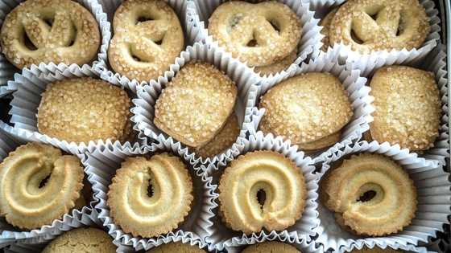
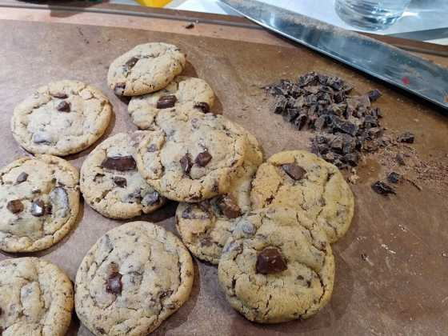
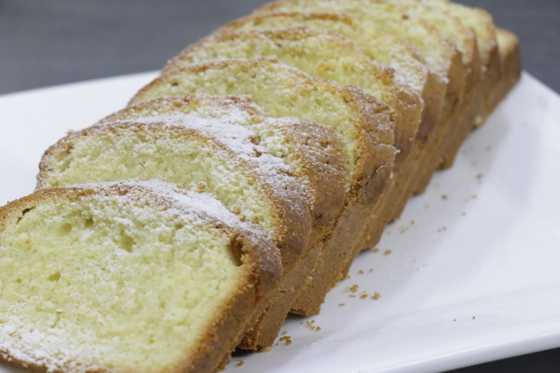
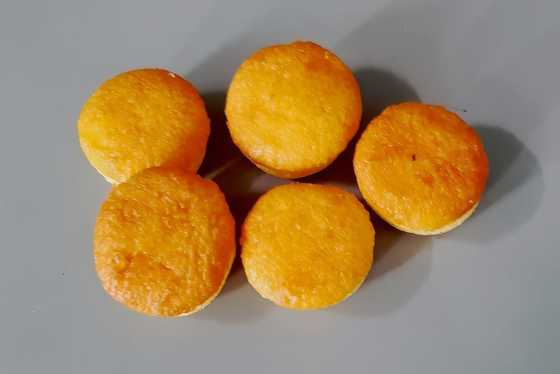
VOICE
以下は制作側が作成したイメージ例です。実在のお客様の声ではありません。
子どもの誕生日に、好きなものを描いてもらいました。箱を開けた瞬間の笑顔が忘れられません。
30代・保護者(イメージ)
フルーツがたっぷりで、家族みんなでぺろりと食べました。お祝いの日にまたお願いしたいです。
40代・主婦(イメージ)
ガトーショコラがしっとり濃厚で、手土産にも喜ばれました。
20代・会社員(イメージ)